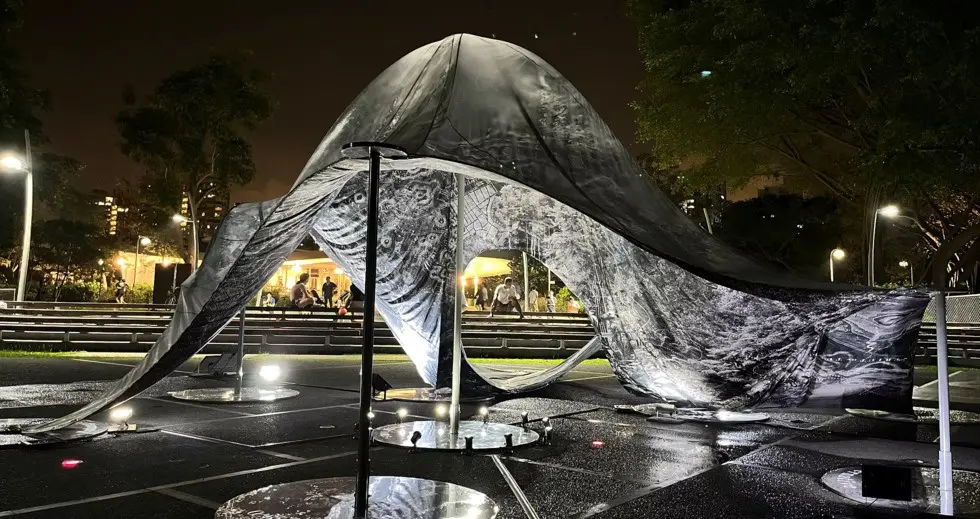
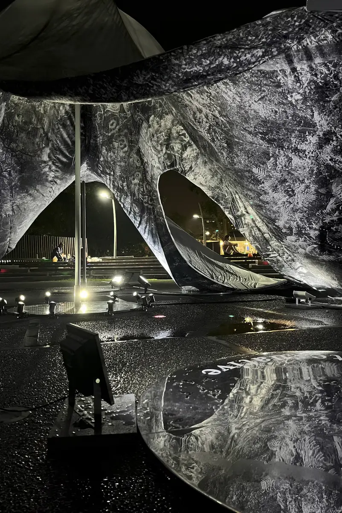
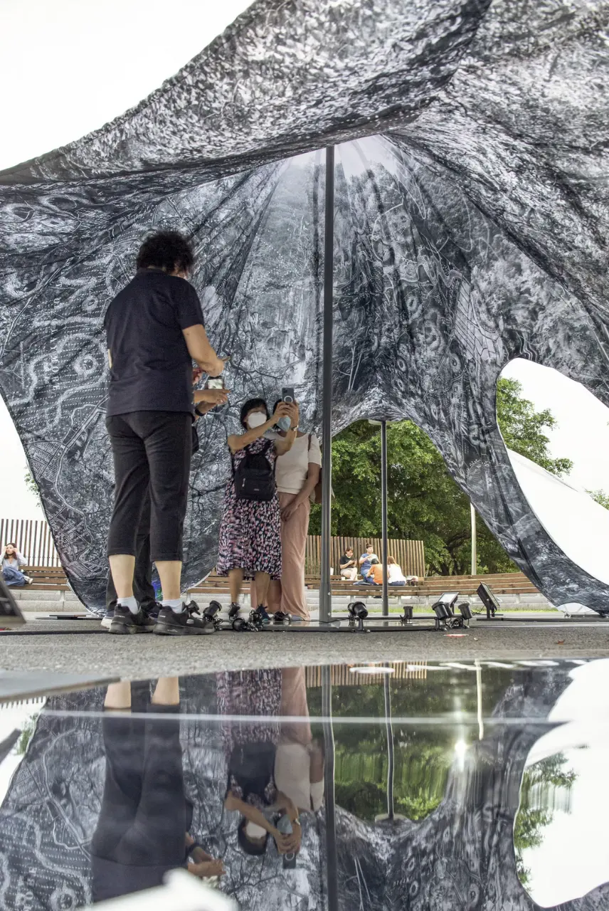
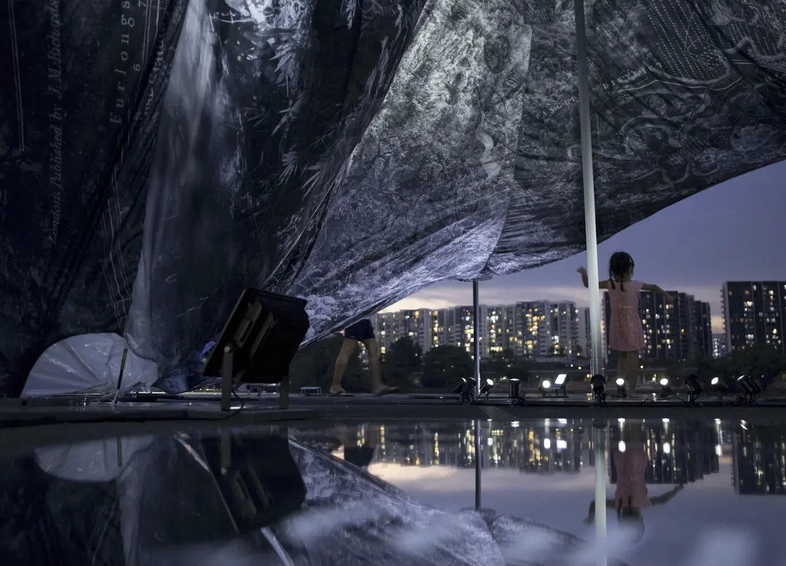

product
Infectious Collaboration Pavilion

- context
- Superstructure
- year
- 2022
- type
- product
Infectious Collaborations is an interdisciplinary exploration of environment, society and the pandemic. This project is initiated by artist Zen Teh and scientist Ching Jianhong, in collaboration with curator Hera and designer Lim Shu Min. It consists of an outdoor art installation, web experience and a series of public programmes. Sited at the Jurong Lake Gardens outdoor stage, the outdoor art installation provides an experiential entry point into the entanglements between human, non-human, sciences, histories and cultures between the ebb and flow of the pandemic. A corresponding web experience can be accessed on site and remotely; it is designed to extend the visitor experience through media content which provide layers of information and interpretations. Produced in conjunction with the artwork, programmes such as online talks and creative workshops aim to engage the public, to provoke thoughts and to provide space for imagining possible ways of living and engaging with nature and urbanism.
Built using sewn fabric, flexible steel spines to hold up the fabric structure and multiple steel pillars of specific lengths.


